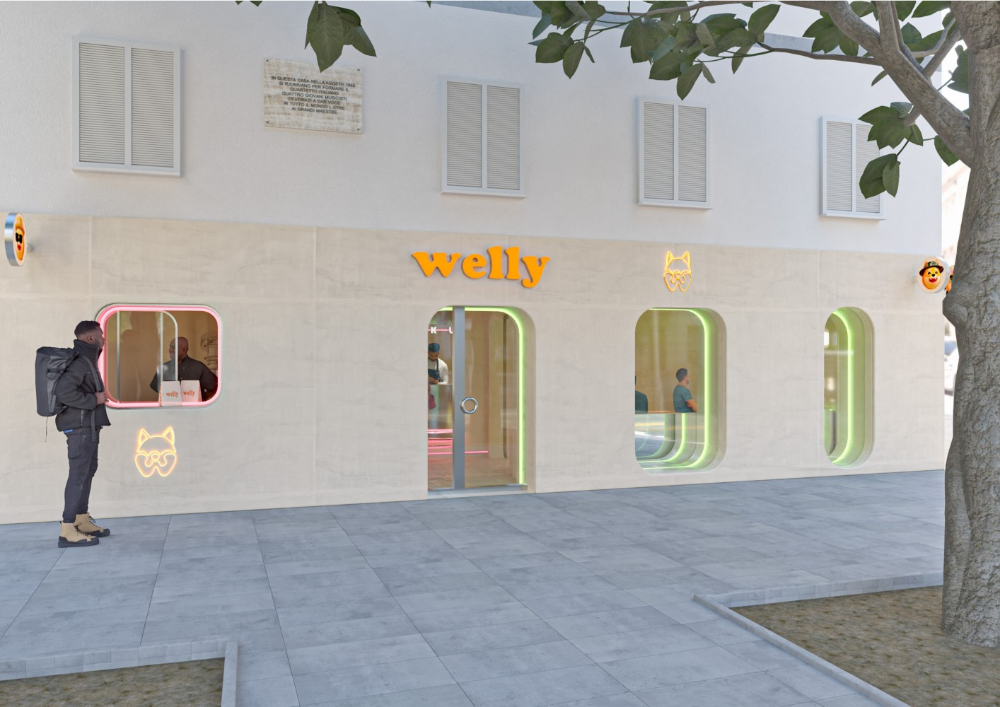

La trasparenza e la partecipazione attiva del cliente non sono concetti che interessano solo il mercato del lusso. Al contrario, l'innovazione e lo sviluppo tecnologico-digitale che dilagano nella nostra società liquida permettono la nascita di nuovi paradigmi e modelli di business anche in settori come quello del fast-food.
È ciò che ha fatto Welly, fast-food nato a Napoli che, dopo l'apertura del primo store nel 2021, ha lanciato una collezione di NFT di successo, notata dal colosso crypto Shiba Inu (offerta attuale di 589,3 mila miliardi di token e un prezzo di 0,000007 dollari ciascuno, fonte). La Community Welly ha già raggiunto 5mila membri su Discord e 50mila followers su twitter e, grazie alla collaborazione di Shiba Inu, il fast-food accetterà la criptovaluta $SHIB come metodo di pagamento (che figata).
Il nuovo NFT in lavorazione
Purtroppo non se ne sta parlando abbastanza, nonostante Forbes li aveva già notati all'inizio dell'anno scorso, quando il rebranding (uno vero, non come quello di Twitter) era ormai iniziato e l'immagine dello Shiba diventava pian piano il nuovo tratto identitario dello store. Nuovo logo, nuovo packaging, nuova mascotte.
Vecchio Logo
Rebranding
Appunto, uno vero rebranding
Basando il loro lavoro su un sistema DAO (Decentralized autonomous organization) il progetto Welly promette di essere il primo fast-food al mondo guidato dalla propria community. In passato, i colossi Burger King e Mc Donald's si erano già avvicinati al mondo cripto. Burger King collaborando con Robinhood ha dato l'opportunità ai propri clienti di vincere bitcoin, ethereum e dogecoin; Mc Donald's lanciando un concorso dove, condividendo il tweet, si aveva la possibilità di vincere NFT dedicati al McRib.
Tutto questo, come sempre, solo in America.
Ma Welly è un progetto italiano, e più che italiano Napoletano. I founder infatti, nonostante i grandi sviluppi del brand e più di 400 richieste per l'apertura in franchising da diversi Paesi, hanno continuato a voler aprire il primo store a Napoli (e non a Milano) che verrà inaugurato l'ultima settimana di Settembre.
Ciò che però mi gasa particolarmente è la trasparenza. I folli founder di Welly hanno infatti deciso di introdurre una supply chain completamente tracciabile tramite blockchain, offrendo ai clienti tutte le informazioni necessarie sulla provenienza dei prodotti, partendo dalla provenienza del cibo della loro fattoria fino alla vendita in store. Ad oggi, sono presenti su ERC20, ma presto i gestionali saranno collegati alla blockchain di Shibarium.
Il progetto Welly si amplierà poi con Welly Fresh, una linea di prodotti healty preparati in laboratori e ghost kitchen dedicate, distribuiti poi sugli scaffali dei supermercati e vending machine. Il 2024 porterà la nascita del franchising in diversi punti mondiali e l'aumento della presenza nella grande distribuzione. Insomma, non finisce qui.
Ho mangiato il primo menù firmato Welly a Maggio 2021 - quando il progetto era solo Welly Burger senza influenze del mondo Web3 - ed ancora oggi lo ricordo come uno delle mie migliori cene fast-food.
Troverete il nuovo store - che invito fortemente a visitare anche solo per godere del design e dell'architettura - in Piazza Sannazzaro 4, Napoli. La seconda tappa italiana sarà Reggio Emilia, entro fine 2023.
I meravigliosi progetti degli store sono stati realizzati da Christophe Penasse e Ana Hernández di MASQUESPACIO Interior Design Studio.
Napoli
Reggio Emilia
Reggio Emilia
Grazie a Vincenzo Maietta, parte del Core Team, ideatore del (primo) Welly Burger e amico stimato per la condivisione di informazioni e immagini esclusive.
Come si dice in questi casi: "support your local artist". Anche quando smettono di essere così tanto local.
È proprio per progetti come questi che bisogna investire nell'innovazione.
Grazie per la lettura! G.